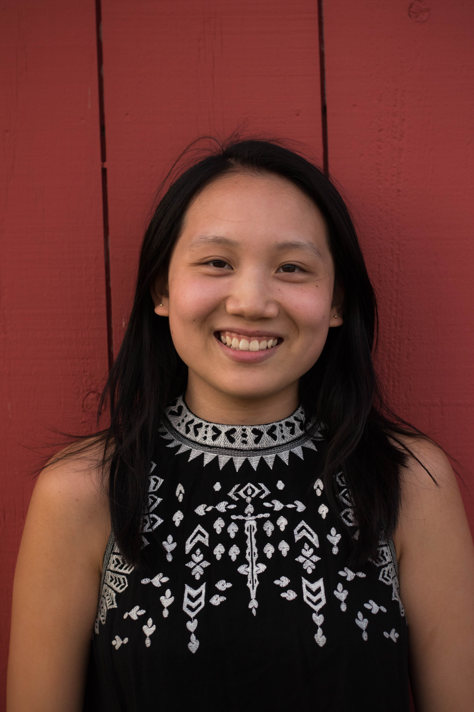

Hello! My name is Rebecca Lee and I'm currently a sophomore at the University of Massachusetts Amherst double majoring in Communication and Chinese with a minor in Information Technology. I'm interested in creating and designing things, whether it's artwork, writing, presentations, or coding projects!
As a student, I've been involved in several cultural organizations and dance clubs as well as my university's Public Relations Club. As a recent member, I've had the opportunity to research pitch ideas for the club's blog website and even write a few of my own pieces regarding marketing strategies and CSR efforts implemented by well-known companies. I've also learned more about the blog-writing process and the public relations industry as a whole; throughout the academic year, I've attended many club meetings, many of which included guest speakers from the industry to talk about their experience in the field and give career tips. Be sure to check out the club's official website here!
I hope to be fluent in a foreign language one day; I believe learning new languages brings new opportunities for people not just in their career paths but also from a cultural perspective.
When I'm not doing homework, you can find me with a paper and pen brainstorming new project ideas...
If you'd like to connect with me, feel free to find me on LinkedIn or send me an email!
